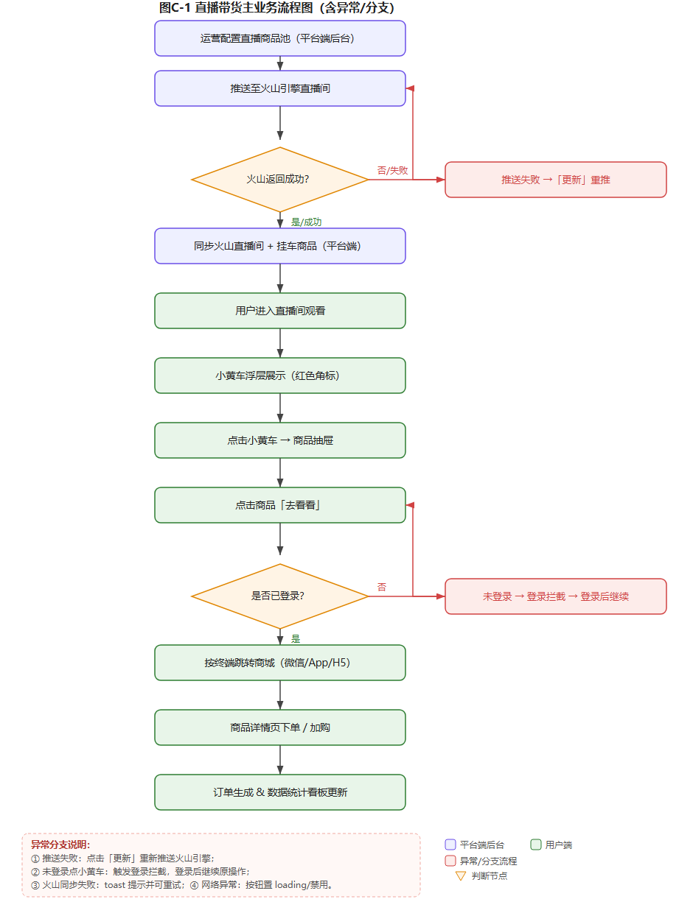
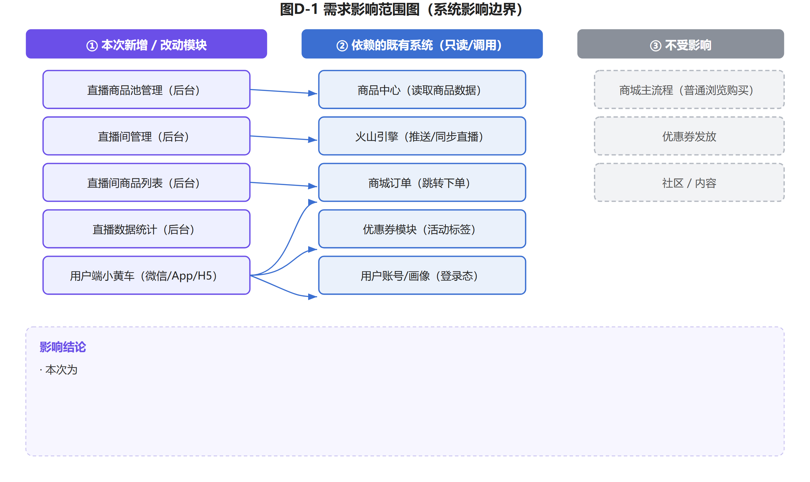
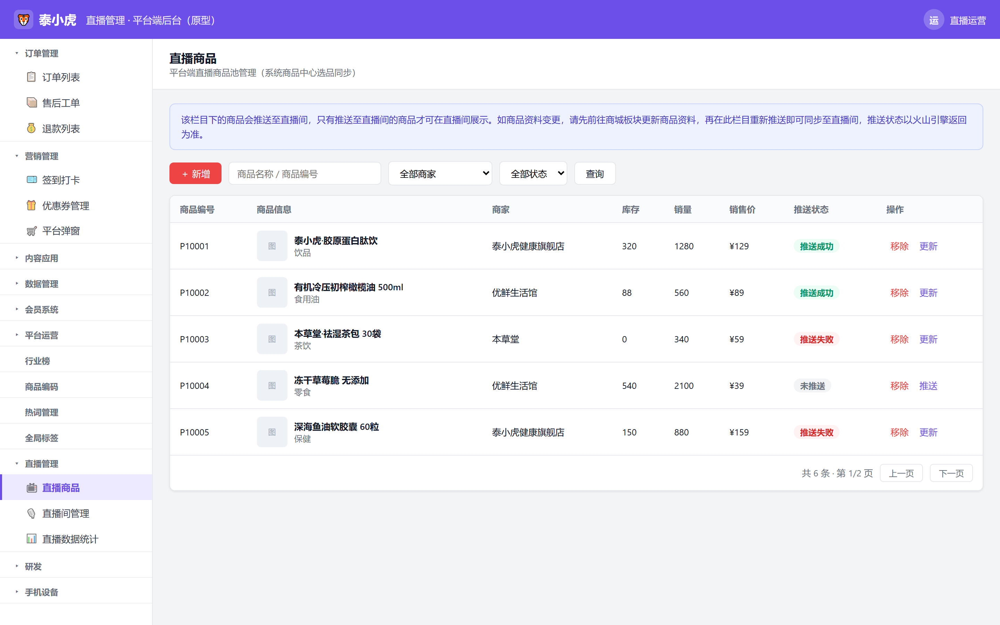
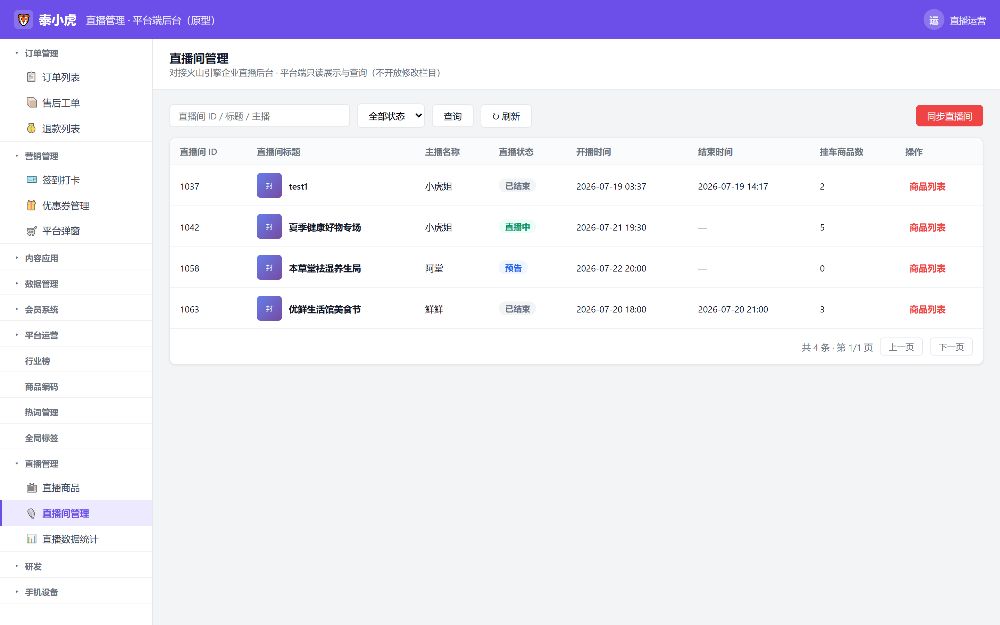
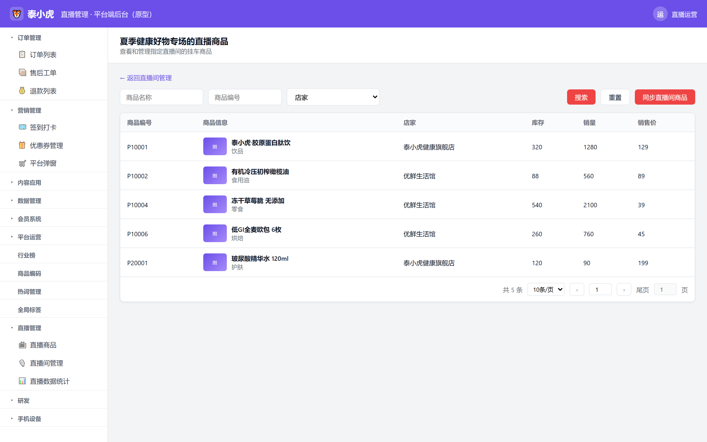
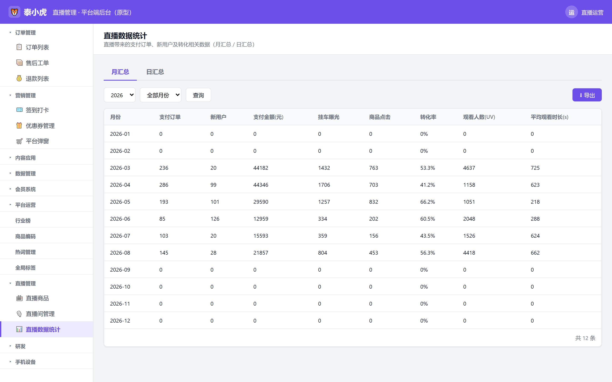
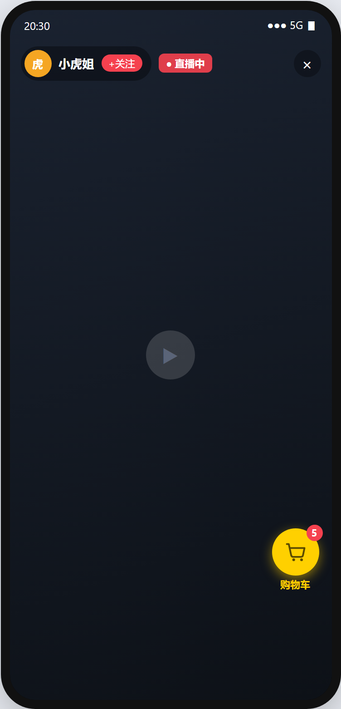
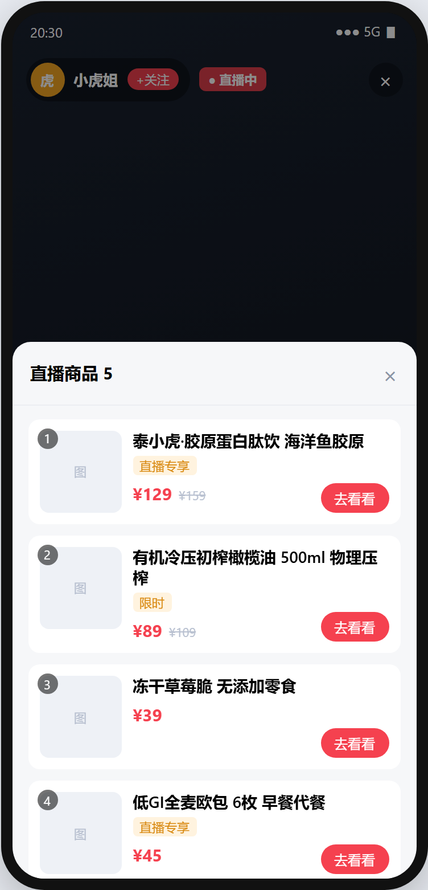
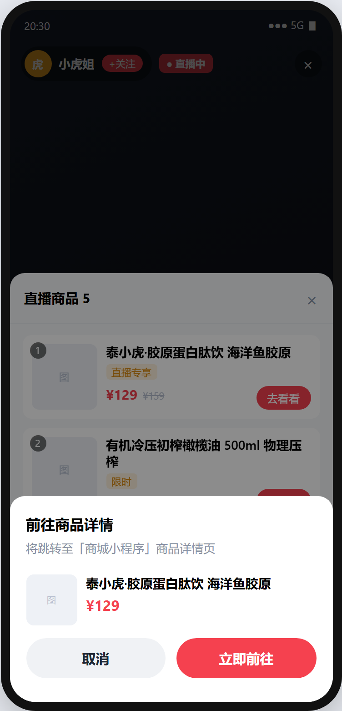
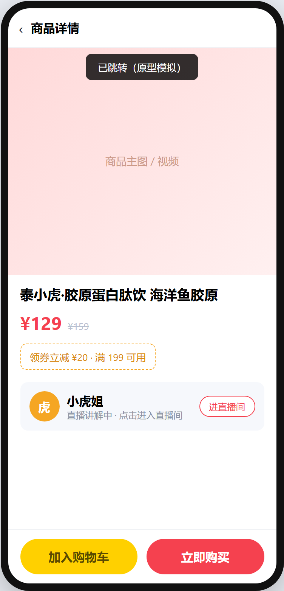

| 字段 | 内容说明 | 示例 |
|---|---|---|
| 项目名称 | 当前迭代或项目的标准名称 | 泰小虎直播挂车与时长发券（直播带货能力） |
| 创建时间 | 文档首次创建的日期 | 2026-07-21 |
| 负责人 | PM、迭代开发 owner、测试负责人 | PM: @产品负责人 / Tech: @研发负责人 / QA: @测试负责人 |
| 文档状态 | 草稿 / 评审中 / 已定稿 / 变更中 | 评审稿 |
| 版本号 | 修订日期 | 修订人 | 修订内容简述 | 状态 |
|---|---|---|---|---|
| v1.0 | 2026-07-21 | @产品负责人 | 首版：基于现有前后端原型梳理直播挂车与时长发券需求；按《PRD输出规范(260715)》模板重构章节结构（§四 按页面拆解、补齐业务流程图/影响范围图/状态机/埋点表/验收标准/边界检查清单） | 评审稿 |
业务背景：泰小虎定位为「智能健康导购助手」，已具备商城商品与优惠券能力。在直播带货场景下，平台运营希望：① 将商城商品池中的健康好物推送至直播间进行讲解售卖；② 实时掌握各直播间的挂车商品与转化数据；③ 用户在观看直播时可通过「小黄车」浏览并跳转下单，提升健康好物转化。
现状痛点：直播商品与挂车依赖火山引擎企业直播后台，平台缺少统一的管理与同步入口；用户端缺少顺滑的「看直播→点小黄车→下单」链路。拒绝空洞描述——当前运营需手工在火山后台维护挂车、且无法在平台侧闭环查看转化数据，是明确的运营效率痛点。
| 目标维度 | 目标说明 |
|---|---|
| 业务目标 | 平台运营可在后台统一维护直播商品池、同步火山直播间与挂车商品、查看直播转化数据 |
| 用户目标 | 观众在直播间内通过小黄车一键浏览商品并跳转购买，路径短、体验顺 |
| 数据目标 | 沉淀直播带来的支付订单、新用户与转化数据，支撑运营复盘 |
| 指标 | 说明 | 来源 |
|---|---|---|
| 直播支付订单数 | 由直播间小黄车引导下单的支付订单 | 直播数据统计（月/日汇总） |
| 挂车曝光 / 商品点击 | 小黄车商品曝光与点击次数 | 埋点 |
| 转化率 | 商品点击 ÷ 挂车曝光 × 100% | 直播数据统计计算字段 |
| 直播新增用户 | 经直播间进入并完成首单/首登的新用户 | 直播数据统计 |
平台端主流程：商城商品中心选品 → 加入直播商品池 → 推送至火山引擎直播间 → 同步火山直播间与挂车 → 查看直播数据统计。
用户端主流程：进入直播间观看 → 点击小黄车浮层 → 展开商品抽屉 → 点击商品「去看看」→ 跳转确认 → 进入商品详情下单。

| 层级 | 对应模块 |
|---|---|
| 前端展示层（用户端） | 直播间观看页 → 小黄车浮层 → 商品抽屉 → 跳转确认 → 商品详情(L3) |
| 后端配置层（平台端后台） | 直播商品池管理 / 直播间管理 / 直播间商品列表 / 直播数据统计 |
| 数据层 / 第三方 | 商城商品中心《商品表》；火山引擎企业直播 OpenAPI（直播间、挂车商品、推送） |
凡涉及状态变化的实体必须提供状态流转表（起始状态 + 触发动作 + 前置/后置条件 = 目标状态）。
3.1 直播商品推送状态流转
| 起始状态 | 触发动作 (Action) | 前置/后置条件 | 目标状态 |
|---|---|---|---|
| 未推送 | 点击「推送」 | 商品已在直播商品池 | 推送成功 / 推送失败（以火山引擎返回为准） |
| 推送成功 | 商品资料变更后点击「更新」 | 先到商城更新商品资料 | 推送成功（重新推送同步） |
| 推送失败 | 点击「更新」 | 火山引擎返回异常后重试 | 推送成功 / 推送失败 |
推送状态由火山引擎接口同步返回（调用即返回成功/失败），无「推送中」中间态。
3.2 直播间直播状态（只读展示，平台端不开放修改）
| 状态 | 说明 |
|---|---|
| 直播中 | 正在开播，可挂车 |
| 预告 | 已创建未开播 |
| 已结束 | 直播已结束 |
需求影响范围：新增直播带货能力；不影响既有商城商品/优惠券模块（仅读取商品中心数据）。用户端小黄车为观看直播场景新增入口，不影响商城主流程。
涉及终端明细：后台 Web 直播商品池/直播间管理/商品列表/数据统计；用户端 微信小程序 / App / H5 内嵌（小黄车三端共享交互，跳转目标不同）。


页面构成：列表区含「＋新增 / 查询 / 刷新」工具栏；列表字段含商品编号、商品信息（图+名+类目）、商家、库存、销量、销售价、推送状态；操作列含「移除 / 推送|更新」；支持分页（5 条/页）。
列表字段明细表：
| 字段名称 | 需求说明 | 备注 |
|---|---|---|
| 商品编号 | 商品唯一编号 | 取《商品表》商品ID |
| 商品信息 | 商品主图+名称+类目 | 取《商品表》 |
| 商家 | 所属店铺 | 取《商品表》shop字段 |
| 库存 | 当前库存 | 取《商品表》 |
| 销量 | 累计销量 | 取《商品表》 |
| 销售价 | 售价 | 取《商品表》，展示为 ¥xxx |
| 推送状态 | 未推送/推送成功/推送失败 | 来自火山引擎返回 |
排序：默认按加入时间倒序；分页：5 条/页；数据唯一判断：商品编号唯一，重复加入自动跳过。
功能按钮权限表：
| 按钮 | 功能说明 | 显示位置 | 权限 |
|---|---|---|---|
| ＋新增 | 从商品中心选品加入商品池 | 列表上方工具栏 | 直播运营 |
| 查询 | 按名称/编号+商家+状态筛选 | 工具栏 | 直播运营 |
| 移除 | 从商品池移除商品 | 操作列 | 直播运营 |
| 推送/更新 | 推送至火山 / 失败重推 | 操作列 | 直播运营 |
查询条件规格表：
| 查询条件 | 控件类型 | 选项来源 | 查询行为 |
|---|---|---|---|
| 商品名称 / 商品编号 | 输入框 | 手动输入 | 模糊匹配名称或精确匹配编号 |
| 商家 | 下拉 | 固定：全部商家/泰小虎健康旗舰店/优鲜生活馆/本草堂 | 精确匹配 |
| 推送状态 | 下拉 | 未推送/推送成功/推送失败 | 精确匹配 |
数据来源：列表字段取《商品中心·商品表》；推送状态调火山引擎接口返回。计算公式：无。
按钮：＋新增（打开选品弹窗）
功能说明：从系统商品中心批量选品加入直播商品池。逐步逻辑：
按钮：推送 / 更新（推送至火山引擎）
功能说明：将商品推送/重新推送至直播间；状态以火山引擎返回为准。逐步逻辑：
按钮：移除
功能说明：从直播商品池移除商品。逐步逻辑：点击 → 二次确认弹窗「确认从直播商品池移除『商品名』？」→ 确认后删除并刷新列表。
边界条件（极端场景）：

页面构成：列表区含「查询 / 刷新 / 同步直播间（红）」工具栏；列表字段含直播间ID、标题（含封面）、主播、直播状态、开播/结束时间、挂车商品数；操作列含红色「商品列表」按钮（页面跳转）。
列表字段明细表：
| 字段名称 | 需求说明 | 备注 |
|---|---|---|
| 直播间 ID | 火山引擎直播间编号 | 数字型，如 1037 |
| 直播间标题 | 直播间名称 | 含封面缩略图 |
| 主播名称 | 主播 | 来自火山 |
| 直播状态 | 直播中/预告/已结束 | 来自火山 |
| 开播时间 / 结束时间 | 起止时间 | 来自火山 |
| 挂车商品数 | 该直播间关联商品数 | 同步后展示 |
排序：默认按开播时间倒序；分页：4 条/页。平台端为只读展示，不开放修改栏目。
功能按钮权限表：
| 按钮 | 功能说明 | 显示位置 | 权限 |
|---|---|---|---|
| 查询 / 刷新 | 筛选/刷新列表 | 工具栏 | 直播运营 |
| 同步直播间 | 从火山引擎拉取直播间与商品 | 工具栏（红） | 直播运营 |
| 商品列表 | 跳转该直播间挂车商品页 | 操作列（红） | 直播运营 |
按钮：同步直播间
功能说明：调用火山 OpenAPI 拉取最新直播间与挂车数据。逐步逻辑：点击 → toast「正在同步火山引擎直播间与商品信息…」→ 调用火山 OpenAPI → 更新列表（直播中直播间挂车数刷新）→ toast「同步完成：已获取 N 个直播间」。数据来源：火山引擎企业直播 OpenAPI。
按钮：商品列表（页面跳转）
功能说明：跳转到该直播间的挂车商品列表页（独立页面，非抽屉）。逐步逻辑：点击 → 记录当前直播间 ID → hash 路由跳转 #room-products → 页面标题显示「{直播间标题}的直播商品」。
边界条件（极端场景）：

页面构成：面包屑返回 + 标题「XX的直播商品」；工具栏含「搜索 / 重置 / 同步直播间商品（红）」；列表字段含商品编号、商品信息（图+名+类目）、店家、库存、销量、销售价；分页 10 条/页（可选 20/50）。
列表字段明细表：
| 字段名称 | 需求说明 | 备注 |
|---|---|---|
| 商品编号 | 商品编号 | 取火山挂车商品 |
| 商品信息 | 商品图+名称+类目描述 | — |
| 店家 | 店铺 | — |
| 库存 | 库存 | — |
| 销量 | 销量 | — |
| 销售价 | 售价 | ⚠️待确认 @干系人：价格单位与展示格式 |
分页：10 条/页（可选 20/50）。计算公式：销售合计 = 销量 × 销售价（⚠️ 待确认 @干系人：是否需在列表展示销售合计列）。
功能按钮权限表：
| 按钮 | 功能说明 | 显示位置 | 权限 |
|---|---|---|---|
| 搜索 / 重置 | 按名称/编号/店家筛选 | 工具栏 | 直播运营 |
| 同步直播间商品 | 从火山同步该直播间商品 | 工具栏（红） | 直播运营 |
说明：本页无「添加本直播间商品」按钮，商品来源仅为火山引擎同步（与截图一致）。
按钮：同步直播间商品
功能说明：从火山引擎同步当前直播间的挂车商品。逐步逻辑：点击 → toast「正在从火山引擎同步直播间商品…」→ 调用接口 → 刷新列表 → toast「同步完成」。
边界条件（极端场景）：

页面构成：顶部「月汇总 / 日汇总」切换；月汇总选「年+月」、日汇总选「年+月+日」；列表含月份/日期、支付订单、新用户、支付金额、挂车曝光、商品点击、转化率、观看人数、平均观看时长；支持「导出」。
列表字段明细表：
| 字段 | 说明 |
|---|---|
| 月份/日期 | 统计维度 |
| 支付订单 | 直播带来的支付订单数 |
| 新用户 | 直播带来的新用户数 |
| 支付金额(元) | 支付总额 |
| 挂车曝光 | 小黄车曝光次数 |
| 商品点击 | 商品点击次数 |
| 转化率 | 商品点击÷挂车曝光×100% |
| 观看人数(UV) | 观看人数 |
| 平均观看时长(s) | 平均观看秒数 |
筛选规则：月汇总 → 选「年+月」；日汇总 → 选「年+月+日」。
计算公式：转化率 = 商品点击 ÷ 挂车曝光 × 100%（保留 1 位小数）；支付金额=Σ各订单金额。
数据来源：⚠️ 待确认 @数据负责人：统计接口/数据表来源（埋点汇总 or 订单表关联直播间来源标识）。
导出：点击「导出」→ 下载 CSV（含 BOM，Excel 可直接打开）。
涉及终端：微信小程序 App H5 内嵌 三端共享交互，跳转目标不同（小程序→商城小程序详情页；App→商城App详情页；H5→H5商品落地页）。




入口浮层（小黄车）：直播间内右下角固定浮层，展示红色角标（挂车商品数）。显示逻辑：有挂车→显示浮层+角标数；空态/加载失败→隐藏浮层。交互：点击浮层 → 展开底部商品抽屉。
商品抽屉列表字段：商品图 / 序号 / 名称 / 活动标签(直播专享/限时) / 价格(含划线原价) / «去看看»按钮。
跳转确认 → 商品详情(L3)：点击商品卡片或「去看看」→ 弹出跳转确认（文案随终端变化：微信→商城小程序 / App→商城App / H5→H5落地页）→ 点「立即前往」→ 进入商品详情页(L3)。详情页操作：领券（可点击领取，领取后状态变更）、进直播间（返回直播间）、加入购物车、立即购买。数据来源：挂车商品取火山引擎直播间挂车接口；商品详情与下单走商城既有链路。
小黄车商品的「活动标签（直播专享/限时）」与「划线原价」均取自商城商品中心《商品表》对应字段，直播间不单独配置。
| 类别 | 要求 |
|---|---|
| 性能 | 列表页加载 < 1.5s；同步直播间接口超时 10s 内给出反馈 |
| 兼容性 | 用户端三端（微信小程序/iOS·Android App/H5）交互一致；后台 Chrome/Edge 最新版 |
| 安全 | 推送/同步等写操作需登录鉴权；接口防重放 |
| 埋点 | 关键转化链路（曝光→点击→跳转）必须埋点，参数含 room_id 与 env |
埋点不允许口头同步，必须按 v2.3 规范以双表（埋点事件表 + 页面分析表）输出。下列事件基于本需求转化链路定义，属性字段与商城既有埋点规范对齐。
埋点表内容较宽（双表共 26 列 + 页面分析表），已从本 PRD 拆出为独立文档，便于横向浏览：
线上地址：https://ddyuan-spec.github.io/taixiaohu/live-tracking.html
本地文件：泰小虎直播挂车与时长发券_埋点表.html（与本文档同目录）
必须站在测试（QA）的角度，写出关键场景的验收标准 (AC)，推荐采用 Given → When → Then 逻辑描述。
| 编号 | 场景 | Given（前提） | When（操作） | Then（结果） |
|---|---|---|---|---|
| AC1 | 推送商品 | 商品在池中且未推送 | 点击「推送」 | 状态变为成功或失败（以火山返回为准），失败可点「更新」重推 |
| AC2 | 同步直播间 | 已登录直播运营 | 点「同步直播间」 | 列表刷新，展示同步后的直播间与挂车数 |
| AC3 | 商品列表跳转 | 直播间列表有数据 | 点「商品列表」 | 跳转到该直播间商品列表页，标题为「{标题}的直播商品」 |
| AC4 | 小黄车空态 | 直播间无挂车商品 | 进入直播间 | 小黄车浮层隐藏；展开后显示空态文案 |
| AC5 | 跳转购买 | 商品未下架 | 点商品「去看看」→「立即前往」 | 进入对应终端的商品详情页 |
| AC6 | 数据统计导出 | 已有统计数据 | 点「导出」 | 下载 CSV，Excel 可正常打开 |
| 检查项 | 自检结果 |
|---|---|
| 网络与异常（弱网/断网/500） | 同步/推送失败给出 toast 提示，列表保持原状，支持重试 ✅ |
| 登录与游客态 | 平台端操作需登录；⚠️待确认 @干系人：用户端未登录点击小黄车是否拦截登录 |
| 极限值与空状态 | 空直播间→空态文案；已下架→置灰；价格/角标展示上限已处理 ✅ |
| 高并发与防重 | 推送/同步按钮建议前端防重（避免重复点击）✅ |